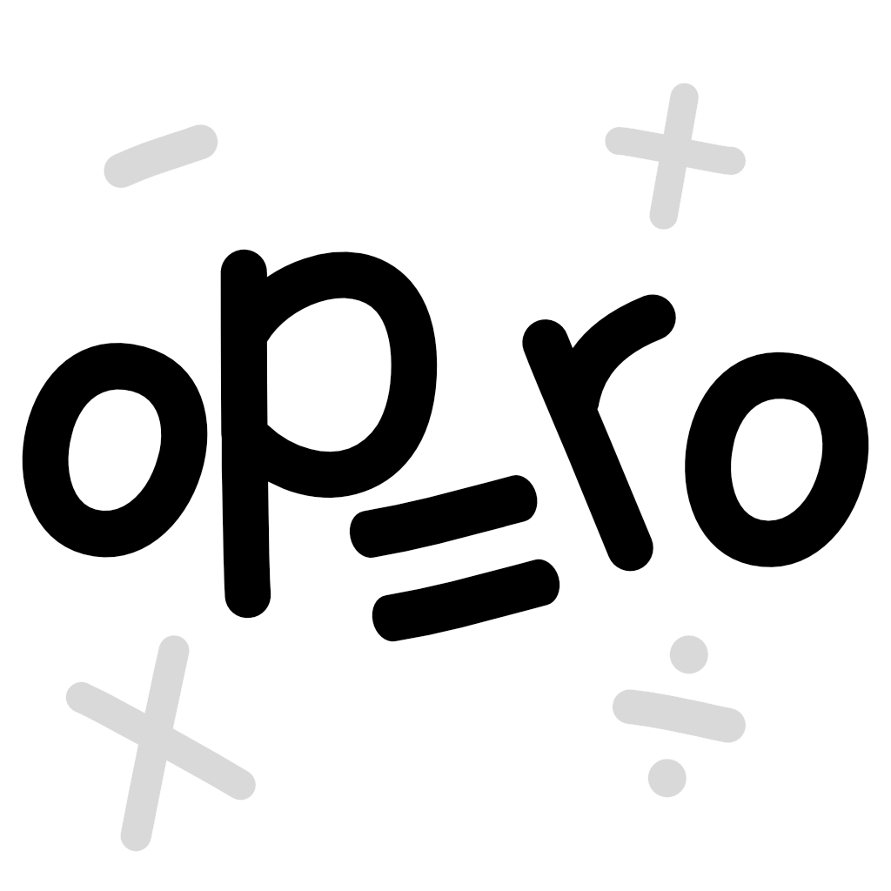

Effective Date: February 19, 2026
Developer: .zipcave (nino.zip94)
Contact: nino.zip94@gmail.com
By using the Opero mobile application, you agree to the following terms and conditions. If you do not agree with these terms, please do not use the app.
Opero is an educational application designed to help users practice and improve their math skills. The app is intended for personal, educational, and non-commercial use only.
Opero is provided as a learning aid. We do not guarantee specific academic results, performance improvements, or learning outcomes.
Any input provided within the app (such as answers, drawings, or voice input) is processed locally on the device. This content is not reviewed, stored, or transmitted by the developer.
Opero offers an optional auto-renewable subscription ("Opero Premium") that unlocks unlimited access to certain features within the app.
Subscription payments are processed securely through Apple’s App Store. Payment will be charged to the Apple ID account at confirmation of purchase.
Subscriptions automatically renew unless auto-renew is turned off at least 24 hours before the end of the current subscription period.
The account will be charged for renewal within 24 hours prior to the end of the current period at the price selected at the time of purchase.
Users (or their parents/guardians) can manage or cancel subscriptions at any time by going to the device’s Settings > Apple ID > Subscriptions.
Deleting the app does not cancel an active subscription.
Opero includes a “Restore Purchases” option to recover previously purchased subscriptions on the same Apple ID.
Because Opero is designed for children, access to subscription purchases is protected by a parental gate mechanism to prevent unintended purchases. Parents or guardians are responsible for approving subscription purchases.
Opero does not display advertisements and does not integrate any third-party advertising networks.
We aim to keep Opero available and functioning properly, but we do not guarantee uninterrupted access, continuous availability, or error-free operation.
All content, design elements, graphics, text, and functionality of Opero are the intellectual property of the developer and may not be copied, modified, or redistributed without prior permission.
Opero is provided "as is" and "as available" without warranties of any kind. To the maximum extent permitted by law, the developer is not liable for any damages resulting from the use or inability to use the app.
Opero is designed to be suitable for children. Parents or legal guardians are encouraged to supervise their child’s use of the app and review its content and features.
We may update these Terms and Conditions from time to time. Continued use of the app after changes are published constitutes acceptance of the updated terms.
These terms are governed by the laws of your country or region of residence, without regard to conflict of law principles.
If you have any questions about these Terms and Conditions, please contact: